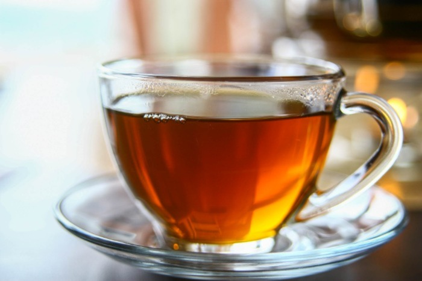

Herbata może i nie jest jedzeniem ale postanowiłem ją tu umieścić, ponieważ jest
bardzo ciakawa. Wyróżniamy dwa główne typy herbaty, mrożoną i zwykłą. Napój ten ma delikatnie gożki
smak jednak możemy to zmienic dodając miód, syrop, cukier czy nawet cytrynę. Kolor herbaty
uzależniony
jest od jej rodzaju jednak najczęściej jest to jasny pomarańczowy.